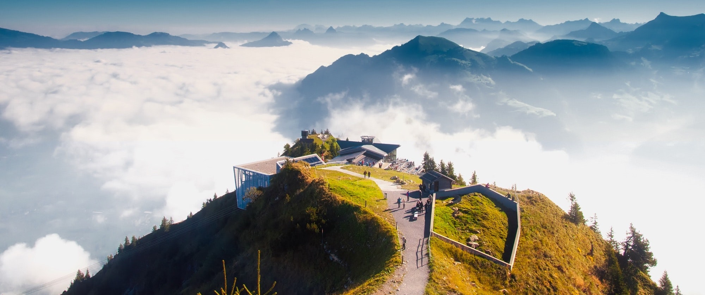
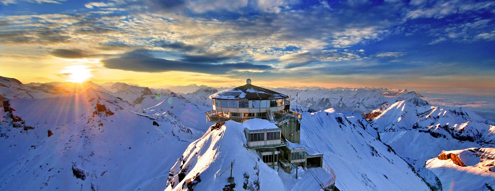
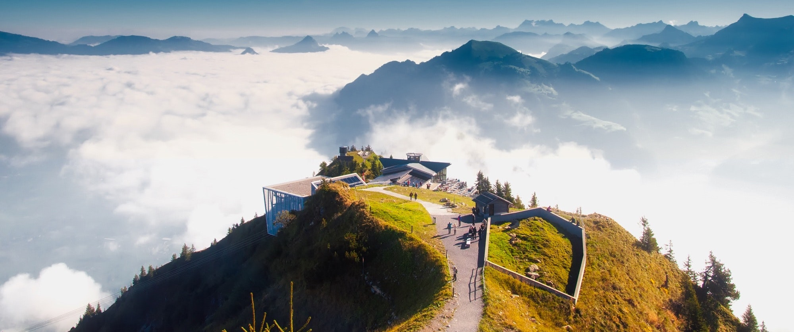
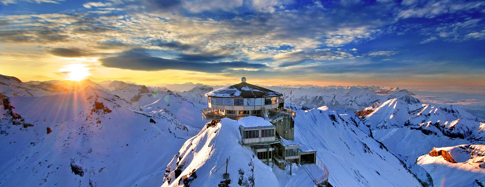

穿越中...
穿越中...
 千亿级像素全景图，鼠标旋转缩放
瑞士-苏黎世
千亿级像素全景图，鼠标旋转缩放
瑞士-苏黎世
 



Welcome to Zurich，Switzerland
苏黎世是瑞士第一大城市和经济商业文化中心。说到世界消费水平最高的城市，无论在哪个年代苏黎世都毫无悬念的排在前三甲位置。
虽然贵为瑞士的大都会，但是纵观整个欧洲从面积小还是从居住人口也不多。苏黎世位于从苏黎世湖北端开始的利马特河四周被长满树林的小山包围。利马特河和锡尔河的交汇于市火车总站广场，邻近瑞士国家博物馆。地理上和历史上的市中心是利马特河左岸的一个小山岗林登霍夫，在利马特河离开苏黎世湖的源头北面约700米。现在城市扩展超越小山所限的地界。
苏黎世的魅力在于它的海纳百川，在这里你可以碰到来自世界各地各种肤色说各种语言的人充斥着这个年代久远同时又朝气蓬勃的城市。在这里你永远不会觉得无聊，无论是有古典情怀还是有现代情结的游客都可以在这里找到共鸣。每年这里都会举办无数的演唱会、演奏会、歌剧，让人目不暇接。夏天，可以从这里坐车去周边的山上踏青郊游。冬天，可以在城市任何一个角落欣赏雪景。作为瑞士第一大城市的苏黎世不像巴黎柏林那样宏大而张扬，它只是一直静静的躺在苏黎世湖边，用它独有的风景吸引并迎接那些懂得欣赏它的人们的到来。
苏黎世在罗马帝国时，是通过水路向帝国运送货物的主要收税点，后来成为神圣罗马帝国的领地，1218年成为帝国属下的自由城，1351年加入瑞士联邦，成为瑞士联邦的第五个州，1440年由于和其他州发生土地纠纷，而引发战争，被瑞士联邦开除，1446年在内战中被击败, 1450年重新被联邦接纳。
1839年9月6日的苏黎世叛乱后，城市为市民的要求而扩展。在17世纪建成的围墙在没有被围攻的情形下被拆毁，以缓和郊区人士对城市霸权的忧虑。1859年奥地利、法国和萨丁尼亚签订苏黎世条约。从1847年开始，瑞士境内的第一条铁路——“西班牙-布罗特利-巴恩铁路”把苏黎世和巴登连接在一起，而苏黎世火车总站则成为瑞士铁路网的起点。现在的总站大楼的历史可以上溯到1871年。
隶属德语区的苏黎世人有着德国人的严谨，非常准时准点。不会过分热情，但十分友好也乐于助人。他们非常遵守先来后到的规矩，无论是在机场、酒店、餐厅、问讯处、ATM都要井然有序的排队并且与已经轮到人保持一点距离，以示尊重。在公共场合不要大声喧哗。如果去比较热门的餐厅用餐最好事先打电话预约，以免长时间等待造成的尴尬。
瑞士人不喜欢讨价还价，除非是二手市场，但也不是每次都能成功的，对于喜欢砍价的穷游儿来说，会在这里碰到很大的挑战。

苏黎世是瑞士文化、教育和科研中心之一。苏黎世湖畔的“馥劳”教堂始建于公元853年，为典型的罗马式建筑。教堂不远处全市最美的巴罗克式建筑是昔日的酒业公会。河对岸正对“馥劳”教堂的建筑是苏黎世大教堂，其一对高耸的塔楼建于15世纪，它是苏黎世城的重要标志。市政厅则是一座华丽的意大利文艺复兴风格的建筑。苏黎世市有各类博物馆、美术馆50多处。苏黎世联邦高工、苏黎世大学等院校均是举世闻名的高等学府，我留瑞的近千名学生中约一半在上述两校深造。瑞士国家博物馆和图书馆也设在这里。列宁1916-1917年在该市从事研究工作，完成了著名的《帝国主义是资本主义发展的最高阶段》一书。